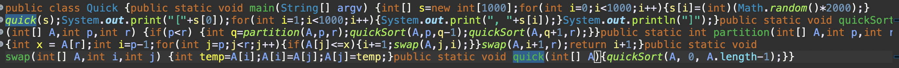

First, there was C. Back in high school, I took my first programming class which was a full semesters’ worth of C programs, puzzles, and files. I just want to ask, why couldn’t I have started with Python or Javascript? C is hell. I hate it. Therefore, my first impression of programming was that it was ridiculously annoying, how you had to specify data types, how 8.3 is actually 8.300000001 in the computer, how you had to deal with pointers, and so much freaking more. It’s so annoying! I mean, even programming with simpler languages like Python are annoying enough when you miss something small like a syntax or logic error. But programming in C???? Annoying. Flat-out, annoying.
What about during your college years, Jared? What about the last couple of years of high school, after you were done with C? Admittedly, programming became easier with time. I switched to languages like Python and Java (my two favorite), started learning scripting languages like C# and Javascript, and learned how to do plenty of different things, such as bash scripting, using unix shells (macOS, ROS, linux), and writing html files. I utilized databases like SQL and Firebase, too. The result of looking into all these areas of computer science produced the experience I have now, to the point that I no longer find problem-solving, debugging, or logic errors annoying. But then I took ICS 311. And ICS 314. ICS 311 is just hard, not annoying, so that’s quite alright. But…
I’ll never see the end of it! First I had to deal with the computer constantly being a baby and not getting over the smallest syntax errors. I got over that, but now in ICS314 I have to check my style?!? On February 7th, during a practice “workout of the day”, I quickly wrote a program that executed the desired tasks, with plenty of time to spare. However, I noticed that IntelliJ was screaming about little things on my teammate’s screen, but wasn’t doing the same for mine. After a few minutes of searching through all my preferences, we realized it was because I had named a file “eslintrc.js” instead of “.eslintrc.js” Read it again, they really are two different file names. If you still didn’t catch it, it’s that “.” in front of eslintrc. Yes, style errors or warnings didn’t show up on my screen because I forgot a period.
Well, easy fix right? Just refactor the file. Yes, that’s not the bad part. The moment I renamed the file - BAM! 16 Errors, red lines all across my screen. And guess what? These stylistic errors were about SPACING. Yes, SPACING! Between curly braces and parentheses (for instance, when passing a function into another function) I had to put spaces. Between double quotes I had to put spaces. I don’t remember where else, but everywhere else I had to put spaces. So many spaces! And a new line belonged at the end of the file, but NOT MORE THAN 1! Just 1. Why so picky!?!
Yes, it is. Most certainly is. And it simply doesn’t help that some coding standards disagree with others! For instance, in my ICS 212 class, we have to define functions using this format:
void foo()
{
return;
}
Whereas in ICS 314, our style guidelines demand this:
void foo(){
return;
}
Once again, if you didn’t catch the difference, it’s that damn opening curly brace showing up after the parenthesis or after a new line. To be honest, I don’t even remember which class demands which. I might’ve reversed them on accident. But I know one demands one, and the other demands the other.
Now to its credit, I do understand the purpose of style guidelines. I’m not oblivious, I know we have to make our code look nice so that teammates can understand our code. After all, I have worked on collaborative projects in the past. However, it is rather annoying that style guidelines show up as “errors” or “incorrect” rather than simple warnings. Moreover, the previously mentioned conflicting style guidelines really does not sit well with me. There does exist the satisfaction of seeing a green checkmark at the corner of the screen, and whatnot. But in full truth, while I do feel that a certain level of readability is necessary for any collaborative project, it is certainly not needed for a solo project/file, and is most certainly not needed at such an extreme level.
Programming is annoying, annoying, and beyond annoying.
Oh, and by they way. That image at the top of this essay? Yep, that’s a quicksort algorithm I wrote in java using only one line, just minutes before publishing this essay. No, I did not write it out normally first then delete lines. I wrote it start to finish with one line, in just about 15 minutes, just to show how much I hate style guidelines. So yes, I can live without style :)